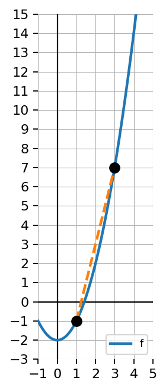
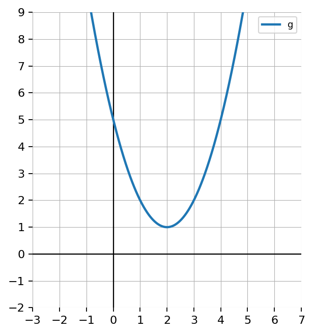

Let \(f(x)=x^2\). Find and simplify:
\(\frac{f(x+h)-f(x)}{h}\)
Use \(\frac{f(b)-f(a)}{b-a}\) to find the average rate of change of \(f(x)=x^2\) from \(x=1\) to \(x=4\).
Use the table to find the average rate of change from \(x=0\) to \(x=3\).
| \(x\) | \(0\) | \(1\) | \(2\) | \(3\) |
|---|---|---|---|---|
| \(f(x)\) | \(2\) | \(5\) | \(10\) | \(17\) |
Use a graph of \(f(x)=x^2-2\) to estimate the average rate of change from \(x=1\) to \(x=3\). Explain how this matches the idea of the difference quotient.

Identify the slope and \(y\)-intercept of each line.
\(y=3x+5\)
\(y=-2x+7\)
\(y=\frac12x-4\)
\(y=-\frac34x\)
For each pair of points, identify the change in \(y\), the change in \(x\), and the slope.
\((1,4),\ (3,10)\)
\((2,7),\ (6,15)\)
\((-1,5),\ (2,-4)\)
State whether each line has positive slope, negative slope, zero slope, or undefined slope.
A line rises from left to right.
A line falls from left to right.
A horizontal line.
A vertical line.
Fill in the blanks.
The form \[y=mx+b\] is called ______ form. The value \(m\) represents the ______, and the value \(b\) represents the ______.
Write an equation of the line with slope \(4\) passing through \((2,9)\).
Use point-slope form first, then rewrite in slope-intercept form.
The table shows a linear relationship.
| \(x\) | 0 | 1 | 2 | 3 | 4 |
|---|---|---|---|---|---|
| \(y\) | 2 | 5 | 8 | 11 | 14 |
Find the slope.
Identify the \(y\)-intercept.
Write an equation.
A student says:
“The slope of the line through \((2,5)\) and \((6,13)\) is \(\frac{2}{4}\) because \(6-2=4\) and \(13-5=8\), so I put the smaller number on top.”
Identify the error and find the correct slope.
A student works at a summer job. After \(3\) hours, the student has earned \(\$45\). After \(8\) hours, the student has earned \(\$120\).
Write a linear equation relating earnings \(E\) to hours \(h\).
Interpret the slope.
Interpret the \(E\)-intercept.
Use the equation to predict earnings after \(12\) hours.
Explain whether the model makes sense for all possible values of \(h\).
For \(g(x)=f(x)+4\), describe the transformation from \(f(x)\) to \(g(x)\).
Use the graph to identify the horizontal and vertical shifts from the parent function.

Write an equation for the graph of \(y=x^2\) shifted right 4 units and up 1 unit.
A student says \(g(x)=f(x-5)\) shifts the graph left 5 units because of the minus sign. Explain the error and give the correct transformation.